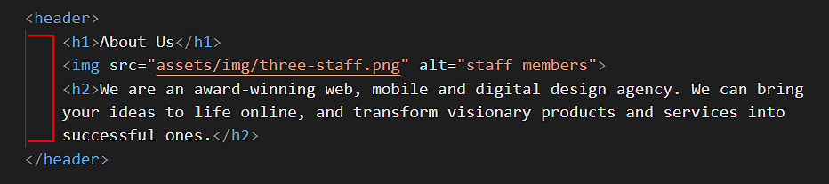
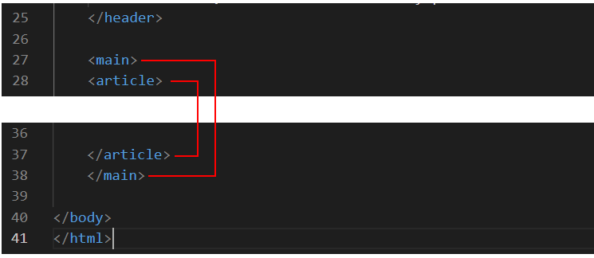

Learning Goals
At the end of this Tutorial, you will be able to:
- Style HTML5-compliant section elements to create vertically divided blocks of content in a web page.
- With minimal font and colour-related updates, reuse a stylesheet with common section CSS values to quickly build web pages with very different visual styles.
You can view finished versions of the three sample web pages you will create in this Tutorial by clicking the links below. The finished samples will each open in a new tab of your web browser.

Downloading your sample files
Your first task is to download the three files you need for this Tutorial.
- In Google Chrome, Brave or Mozilla Firefox Developer Edition, click the following link: page-11.html This HTML file will open in a new tab of your web browser.
- Right-click anywhere in the web page and choose View Page Source from the context menu displayed.
Next, right-click anywhere on the web page source and choose Save as... (Chrome or Brave) or Save Page As... (Firefox) from the context menu displayed.
Save the web page in the exercises sub-folder of your websites folder with the name page-11.html
 Ensure the Save as type: dropdown list is set to Webpage, HTML only (*.HTML, *.htm).
When finished, you can close the browser tab containing the page-11.html web page.
Ensure the Save as type: dropdown list is set to Webpage, HTML only (*.HTML, *.htm).
When finished, you can close the browser tab containing the page-11.html web page. - Next, click the following link: style-11.css This stylesheet file will open in a new tab of your web browser.
- Right-click anywhere in the browser window, and from the context menu, choose Save as... (Chrome/Brave) or Save Page As... (Firefox).

- Save the style-11.css stylesheet file in your websites/exercises/assets/css sub-folder.
- Finally, save the following image to your websites/exercises/assets/img sub-folder:
 three-staff.png
three-staff.png
Working with your sample web page
You are now ready to work with your downloaded sample web page and stylesheet.
- Start VS Code, and then open the following two files:
page-11.html
style-11.css - In the HTML file, you can see that the body of the web page begins with a header block with three child elements: a main <h1> heading, an <img> image and an <h2> sub-heading. 
- Under the header is the main block containing a single article. These two opening tags are closed at the end of the web page.  The main and the article tags are included solely to ensure the web page is HTML5 compliant. These two tags are not used to style any element in the page.
- Within the article is a block of content inside a section which is a parent element to three child elements: a <h1> heading and two p paragraphs.
 Note that, for each of the two parent elements of header and section, the child elements are indented in from the left edge of the VS Code screen.
Note that, for each of the two parent elements of header and section, the child elements are indented in from the left edge of the VS Code screen. - Copy-and-paste three copies of the section block within the page.
Update the text within the <h1> heading from “Section Heading One“ to “Section Heading Two“, “Section Heading Three“ and “Section Heading Four“.
Your web page should now look as shown below.
 In every case, ensure the child elements are indented from the left edge of the VS Code screen.
In every case, ensure the child elements are indented from the left edge of the VS Code screen. - Scroll up to the top of the web page.
In the head block, after the link to the style-11.css stylesheet, copy-and-paste the following new style rule that will apply to both the header and section blocks within the page.
<style> header, section { border: solid 2px red; } </style>
The head block should now look as shown below.
- When finished, save the page-11.html file and view it in your web browser. It should look as shown below.
You can view a sample of the web page as it now looks by clicking the link below.
page-11.html (with red borders around header and section blocks)
The red border technique for visualising content blocks
The placing of a thin, red-coloured border around HTML content blocks elements is a common technique or ‘hack’ used by designers to help them view a web page’s structural layout in the web browser.
Working with your sample CSS file
Next, display the linked style-11.css stylesheet file in VS Code.
You can see that, for the following range of viewport widths, horizontal and padding values have been added fo the header and sections blocks:
- 1200px and wider (larger screens)
- 1025px to 1199px (tablets and smaller screens)
- 768px to 1024px (tablets)
- 400px to 767px (larger mobiles)
- Up to 399px (smaller mobiles)

These (sort of) standard padding spacing values should work for most if not all web pages created with the HTML5 section element.
Adding more left and right ‘white space’
The left and right ‘white space’ set by the padding values in the style-11.css stylesheet is fine for busy, crowded, multi-column page layouts.
For this simple, single-column layouts, let's use two classes in the stylesheet file to make the single-column narrower on desktop/laptop screens.
- In VS Code, display the page-11.html file, and add the CSS header-narrow and section-narrow classes to the header and section blocks as shown below.

- Save your page-11.html file.
- Next, set an 800px limit on the width of the image in the header block.
To do so, switch to the style-11.css stylesheet and update the current header img selector in the CSS file by copying-and-pasting the following:
/* Image in header */ header img { max-width: 800px; margin-left: auto; margin-right: auto; margin-bottom: 24px; }
The left and right margin values of auto distribute any remaining horizontal spacing equally at the left and right of the image when the image is cente-aligned. - When finished, save your style-11.css file and view page-11.html in your web browser. It should now look as follows.

You can view a sample of the web page as it now looks by clicking the link below.
page-11.html (with narrower header and section blocks)
Centering the header block
The next task is to change the alignment of the content within the header block, from left-aligned to centre-aligned.
We will follow and approach that:
- Does not require editing (and perhaps breaking!) any existing style rules in the stylesheet.
- Will not affect the appearance of any other web page that might be based on the current stylesheet.
- Increases the re-usability of the stylesheet for other web pages we may create in the future.
Here are the steps.
- In VS Code, scroll down to the bottom of the style-11.css stylesheet.
- Copy-and-paste the following comment and new style rule to the end of the file.
=============== UTILTY CLASSES ============== .text-center { text-align: center !important }
That this style rule is positioned at the end of the stylesheet means that it will override any other style above it that it might conflict with. The !important keyword makes doubly-certain this style rule always ‘wins’ any conflict with other styles. - When finished, save the style-11.css stylesheet.
- Switch to the page-11.html web page, and add the new utility class you have created to the header block as follows.

- When finished, save your page-11.html file and view it in your web browser. It should now look as follows.

You can view a sample of the web page as it currently looks by clicking the link below.
page-11.html (with centred header block)
Adding background colours
In the next few steps, you will add some new classes to create different background colours for your web page.
- In VS Code, scroll down to near the end of the style-11.css stylesheet. Just before the utility class, copy-and-paste the following three new selectors and style rules. Each selector does only one task: it adds a background colour.
/* Coloured backgrounds */ .bg-header { background-color: #f5f9fb } .bg-blue-light { background-color: #d8f0f5 } .bg-blue-dark { background-color: #1435b3 }
The final few lines of your CSS file should now look as follows. When finished, save your style-11.css file.
When finished, save your style-11.css file. - In VS Code, switch to the page-11.html web page.
To the header block, add the new bg-header class as shown below.

- To the first and third section blocks add the new bg-pastel-1 class as shown below.

- To the second and fourth section blocks, add the new bg-pastel-2 class as shown below.

- You can now delete the ‘red box’ style rule from the head of the web page.
A better option might be to wrap it inside comment tags, just in case you want to reuse this visual guide again later. To do so, copy-and-paste the following lines over the current ‘red box’ style rule.
<!-- <style> header, section { border: solid 2px red; } </style> --> - Save the page-11.html file and display it in your web browser. It should now look as shown below.

You can view a sample of the web page as it now looks by clicking the link below.
page-11.html (with alternating background colours)
Alternating font colours between container blocks
We still have some more work to do with this third sample web page and stylesheet.
- For the section blocks with a dark blue background, both the headings and text paragraphs should display in a light blue colour.
- For the section blocks with a light blue background, the headings should display in a dark blue, and the text paragraphs in a dark colour closer to black.

Follow these steps:
- In the style-11.css stylesheet, add the following new lines near the bottom of the file, just after the current background colours.
/* Light blue section background: h1 headings and p text paragraphs */ .bg-blue-light h1 { color: #1435b3 } .bg-blue-light p { color: #222 } /* Dark blue section background: h1 headings and p text paragraphs */ .bg-blue-dark h1 { color: #fff } .bg-blue-dark p { color: #fff }
See below.
- When finished, save your style-11.css stylesheet and view the page-11.html web page in your browser. It should now look as shown below.

Click the link below to view a the page with corrected colous in a new tab of your web browser.
Using a linear colour gradient as a background
In all three sample web pages above you have applied what are called solid background colours to the section blocks, using the background-color style property.
CSS also offers a property called background-image that enables you to apply linear gradients to <div> blocks and other web page elements.
Linear-gradients are of two main types:
- Gradients of the same colour. For example, from a light blue to a dark blue.
- Gradients of different colours. For example, from blue to green.
Let’s apply a linear gradient background to our third sample web page.
- In VS Code, open your style-11.css stylesheet.
- Near the bottom of the file, you can see the following selector and style rule.
.bg-blue-dark { background-color: #1435b3 }
- Replace this by copying-and-pasting the following.
/* Default gradient direction: top to bottom */ .bg-blue-dark { background-image: linear-gradient(#0575e6, #1435b3) }
See below.
- Save your stylesheet and view the page-11.html web page in your browser.
You can see that the dark blue background subtly changes from lighter to darker, in the direction from top to bottom.

- You can change the default (top-to-bottom) direction of a linear gradient by adding a direction setting within the property value.
For example, linear gradients more commonly change from left to right.
Under the linear gradient you added earlier, copy-and-paste this new left-to-right gradient. It has the same two colours. But because of the extra 90deg setting, the direction is different.
/* Gradient direction: left to right */ .bg-blue-dark { background-image: linear-gradient(90deg, #0575e6, #1435b3) }
- Save your stylesheet and view your page-11.html web page in your browser. You can see that the dark blue background changes from left to right.

Click page-11.html to view a finished sample of this web page in a new tab of your web browser.
✅ All done. You have now finished this third sample exercise.
Here are some more examples of linear gradients for you to experiment with in your web pages.
/* Green */ background-image: linear-gradient(90deg,#02727e,#06b294);
/* Bronze */ background-image: linear-gradient(90deg,#6b2d38,#cd6065);
/* Purple to orange - modern */ background-image: linear-gradient(90deg,#e052a0,#f15c42);
/* Purple (AIB Bank) */ background-image: linear-gradient(90deg,#802b7b,#de0a85);
/* Blue (Disney Channel ad) */ background-image: linear-gradient(90deg,#07092f,#165cc0);
/* Yellow to blue - tangy! */ background-image: linear-gradient(90deg,#b8ea0a,#50c8f7);
Here are some websites that will generate the code for colour gradient backgounds:
Updating your website home page
Now that you have created and styled three new web pages, let’s add hyperlinks to them on the ‘home page’ of your web site. Follow the steps below:
- In VS Code, open this HTML file in your ‘main’ websites folder: index.html
- Copy-and-paste the following new line to your web page, to just after the link to page-10.html.
<p><a href="exercises/page-11.html">Web Page with Alternating Sections</a></p>
Save your index.html web page and view the result in your browser.
Uploading your files to GitHub
After finishing your web page and stylesheet, you are now ready to upload them to your account on GitHub.
- Open a new tab in your web browser and go to GitHub.com. If you are not already signed in to your GitHub account, sign in now.

- On your GitHub home page, click the ‘repo’ that holds your web pages. Its name will look as follows, where username is your chosen username on GitHub.
username.github.io

- On the next GitHub screen displayed, near the right of the screen, you can see a button named Add file. Click on it.

- From the dropdown list displayed, choose the option Upload files.

- In File Explorer (Windows 10) or Finder (Apple Mac), drag-and-drop your index.html file and your 📁 exercises sub-folder to upload them to your repository on GitHub.

- Scroll down to the bottom of the GitHub screen, and accept or edit the short message (Add files via upload) in the Commit changes box.
- Finally, click the green Commit changes button to upload your files.

Your updated home page and three sample pages are now published on GitHub at web addresses similar to the following:
https://username.github.io/index.html
https://username.github.io/exercises/page-11.html
It may take a few minutes for your uploaded files to appear on GitHub.